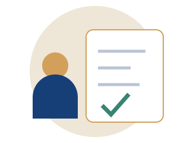
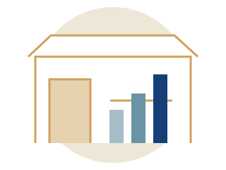

01 / الزائراستفد أكثر من زيارتك
هل تستحق الفعالية وقتك وتكلفة رحلتك؟ اكتشف مدى ملاءمتها لهدفك وحدد أولويات الزيارة.
- تقييم ملاءمة الجهات والجلسات
- تحديد ما يحتاج إلى تحقق
- خطة قبل الزيارة وأثناءها وبعدها
حقق أقصى استفادة من المعارض والمؤتمرات. قيّم قرارك، جهز خطتك، وحوّل اللقاءات والمعرفة إلى نتائج.
اختر مسار مشاركتك ←مساران يساعدانك على اتخاذ القرار وتجهيز خطة قابلة للتطبيق.

01 / الزائرهل تستحق الفعالية وقتك وتكلفة رحلتك؟ اكتشف مدى ملاءمتها لهدفك وحدد أولويات الزيارة.

02 / العارضهل يناسبك حجز جناح؟ قيّم الجمهور والجاهزية والتكلفة، وقارن خيارات المشاركة.
هدفه اختيار مورد. يبدأ بقائمة جهات، ثم يرتب اللقاءات، ويعود بعروض قابلة للمقارنة.
تراجع الجمهور والتكلفة قبل حجز الجناح، ثم تحدد الفرص التي تحتاج إلى تحقيقها.
أجب عن 5 أسئلة حسب هدفك. تظهر ملاءمة الفعالية وتغطية الأدلة بشكل منفصل. تحفظ المسودة على هذا الجهاز.
يستند المشروع إلى خبرة نايف المحمدي الممتدة لأكثر من 20 سنة وزياراته للمعارض في أكثر من 30 دولة.
حدد نتيجة تريد الوصول إليها. للزائر، جهز قائمة الجهات والأسئلة ومواعيد اللقاء. للعارض، اطلب بيانات الجمهور وعرض تكلفة كامل وحدد أهداف الجناح.
سجل نتيجة كل لقاء والخطوة التالية. للزائر، قارن الخيارات على معايير واحدة. للعارض، فرّق بين مرور الزائر وحدوث لقاء وفرصة مؤهلة.
حدد مسؤولًا وموعدًا لكل متابعة. قارن النتائج بالأهداف بعد 7 أيام ثم بعد دورة البيع المناسبة.
دليل الهيئة العامة للمعارض والمؤتمرات · معهد اليونسكو للإحصاء · الأمم المتحدة
مثال تدريبي: يضم مؤتمر مستقبل القهوة معرض معدات ومنتدى استثمار وورش تحميص. يسجل التقويم الفعالية مرة واحدة مع مكوّناتها. يفتح بحث «معرض» بطاقة المؤتمر مع توضيح الجزء المطابق. ويختار المستخدم تقييم المؤتمر كاملًا أو معرض المعدات أو ورشة محددة. لكل جزء موعد وشروط دخول عند توفرها.
اليوم الدولي للقهوة مناسبة سنوية في 1 أكتوبر. إذا أعلنت جهة عن مهرجان أو ورشة احتفاء به، تدخل الفعالية بنوعها وترتبط بالمناسبة.
المنظمة الدولية للقهوةأداة AUMA لقياس منافع المشاركة · دراسة الجذب والتواصل والتحويل · دراسة تجربة زائر المعرض
دليل منتقى حسب المهمة، يشمل مشاريع مفتوحة وأدوات تشغيل جاهزة.
نظم زيارات الأجنحة والجلسات في تقويمك. يدعم ical.js قراءة ملفات المواعيد، ويمكن الرجوع إلى pretalx لبرامج المؤتمرات التي تستخدمه.
ical.js ↗ · pretalx ↗ZXing يقرأ رموز QR عبر المتصفح، وTesseract.js يستخرج النص من الصور. راجع أسماء الأشخاص والشركات بعد الاستخراج.
ZXing ↗ · Tesseract.js ↗حوّل نتائج اللقاءات إلى مهام في مسراح، أو استكشف selXP لتسجيل الفرص البيعية ومتابعتها ميدانيًا.
مسراح ↗ · selXP ↗اختيارات من السعودية والعالم. تحقق من موعد النسخة وشروط الدخول لدى المنظم.